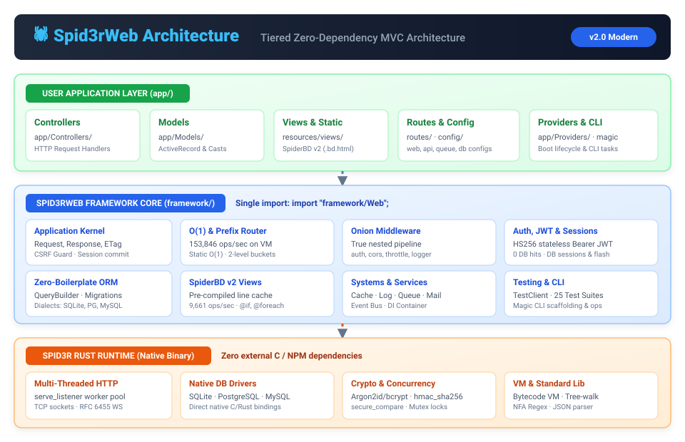
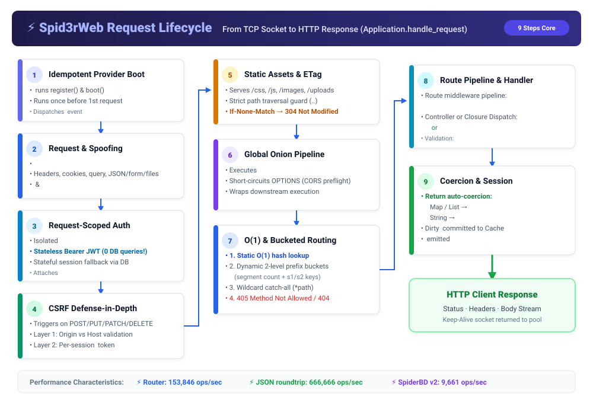
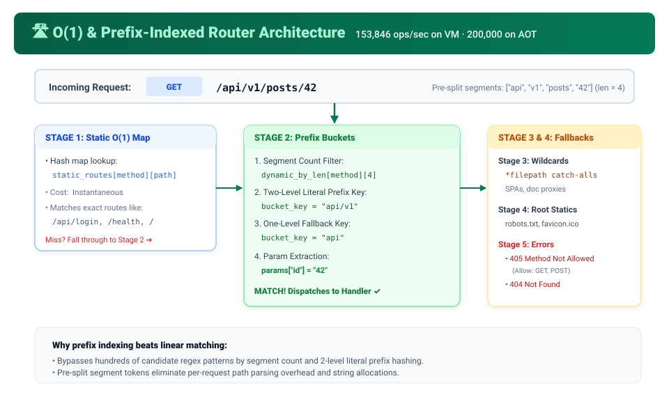
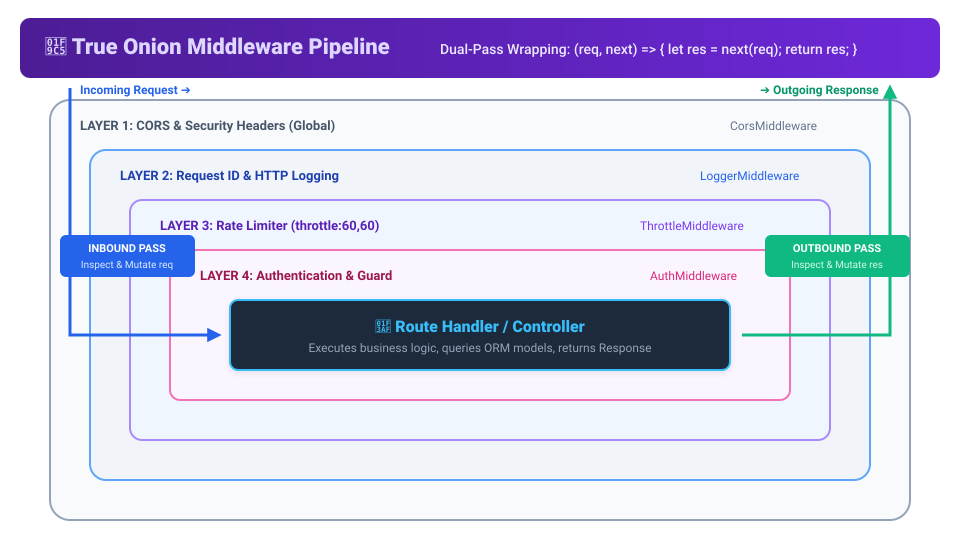
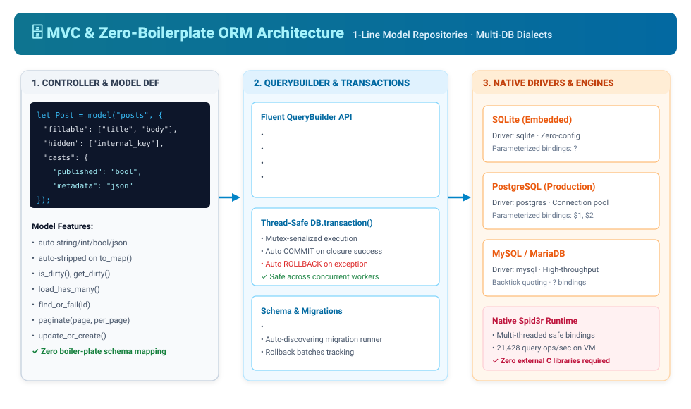
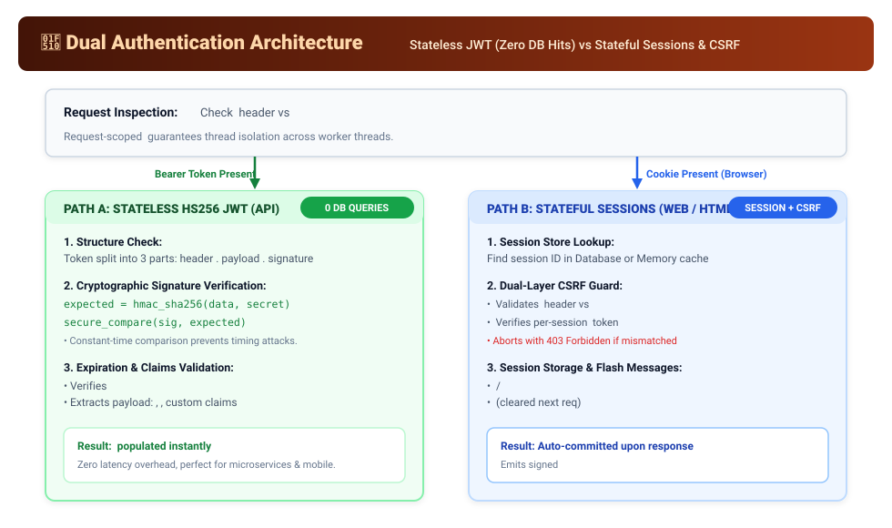
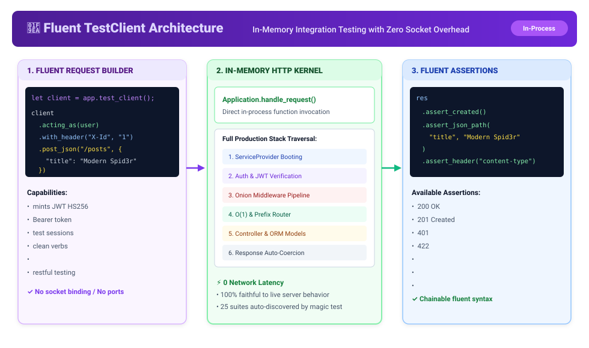

🕷️ Spid3rWeb Developer Documentation
Spid3rWeb is a modern, lightweight, high-performance full-stack MVC framework for the Spid3r programming language — combining Express/Fastify-style routing ergonomics with zero-boilerplate Active Record models, an O(1) + prefix-indexed router, a true Onion middleware pipeline, stateless JWT & session auth, SpiderBD v2 templates, and a fluent integration TestClient, all with zero external dependencies. This page is the main developer guide; the numbers in it (suite counts, benchmark rates, command lists) were checked against the repository and benchmarks/RESULTS.md at the time of writing.
New to Spid3rWeb? Follow the sidebar top-to-bottom: Installation & Setup → Request Lifecycle → Routing → Controllers → Models → Views. Each code block is labeled with its language (spid3r / shell / template) and has a Copy button in its top-right corner. In a hurry? Jump to the Common Recipes section for a complete CRUD API in 25 lines, or the API Cheat Sheet for a full method index.
Single-Import DX
Import "framework/Web" once to access web(), model(), router(), route(), abort(), db(), schema(), auth(), jwt(), hash(), cache(), log(), queue(), mail(), storage(), events(), config(), views(), and test_client().
153k VM / 200k AOT Router
O(1) hash lookup for static routes, 2-level segment & prefix indexing for :param / {param} routes, *wildcard catch-alls, sub-router mount(), and named route() URL generation.
True Onion Middleware
Write (req, next) => { let res = next(req); ... return res; } closures or classes. Built-in aliases: auth, guest, cors, logger, etag, request_id, and throttle.
1-Line Models & Casts
Define models in 1 line with model("posts", opts): automatic bool/int/float/json casts, hidden field stripping, dirty tracking, find_or_fail(), and batched eager loading.
1-Line Validation
req.validate_or_fail(rules) validates and coerces inputs to native int/float/bool types, or automatically aborts with a 422 Unprocessable Entity response.
Stateless JWT + Sessions
Zero-DB-query HS256 jwt().sign / jwt().verify Bearer authentication alongside CSPRNG DB sessions, Argon2id password hashing (bcrypt supported, transparent rehash on login), HMAC-signed cookies, and req.session() flash messages.
SpiderBD v2 Views
Pre-compiled template line cache with file_mtime invalidation, rich @if(a == b and c >= 10) / @elif expressions, loop metadata in @foreach, @csrf, and @method('PUT').
Fluent TestClient
Test your entire HTTP stack in-memory without opening sockets: app.test_client(), acting_as(user), post_json(...), and assert_json_path(...).
Architecture & Technical Diagrams
Visual schematics illustrating Spid3rWeb's zero-dependency runtime layers, request flow, router matching, onion middleware wrapping, ORM persistence, and dual authentication.

Layer Breakdown: User application code (app/) builds on top of the Spid3rWeb framework core (framework/), which communicates directly with Spid3r's native multi-threaded HTTP/1.1 socket pool, cryptographic primitives, and native database drivers without third-party C or NPM packages.
Request Lifecycle
9-step end-to-end processing pipeline from TCP connection to keep-alive response.
Onion Middleware
Dual-pass (req, next) => next(req) pipeline wrapping controller execution.
O(1) & Prefix Router
153,846 ops/sec (VM) / 200,000 ops/sec (AOT) in benchmarks/bench.matrix (200 routes, :param capture): static hash lookup plus 2-level prefix buckets.
MVC & ORM Architecture
1-line models, auto type casting, dirty tracking, QueryBuilder, and native drivers.
Dual Auth & CSRF
Zero-DB stateless HS256 JWT validation alongside session cookies and CSRF guards.
Fluent TestClient
In-memory integration testing with zero sockets, acting_as() JWT auth, and JSON assertions.
Diagrams Directory
Browse standalone SVGs, editable Mermaid source files, and developer specifications.
Single-Import Barrel (framework/Web)
Spid3r imports are explicit and non-transitive. Instead of importing 8 separate files in every script, import "framework/Web" to get factory functions and subsystem accessors in one line:
import "framework/Web";
let app = web();
// 1-line model repository with automatic type casting & hidden fields
let Post = model("posts", {
"fillable": ["title", "body", "published", "meta"],
"hidden": ["secret_token"],
"casts": {"published": "bool", "meta": "json"}
});
// Return a map or list directly -> auto-serialized as 200 application/json
app.get("/api/posts", req => {
return Post.latest().paginate(req.page(), req.per_page());
});
// Automatic 404 JSON/HTML when record is missing via find_or_fail()
app.get("/api/posts/:id", req => {
return Post.find_or_fail(req.int("id")).to_map();
}).name("posts.show");
// Express-style (req, res) handler + 1-line validate_or_fail()
app.post("/api/posts", (req, res) => {
let data = req.validate_or_fail({
"title": "required|min:3|max:200",
"body": "required|min:10",
"published": "nullable|bool"
});
let post = Post.create(data);
return res.status(201).json(post.to_map());
}).middleware(["auth", "throttle:60,60"]);
app.listen(8000);Tech Stack
Spid3rWeb 1.1.1 runs on the Spid3r runtime and requires Spid3r ≥ 1.1.1 (framework/Foundation/RuntimeVersion.matrix enforces this at boot in production and in magic doctor). There are no external packages.
| Layer | Provides |
|---|---|
| Spid3r Runtime (Rust) | Multi-threaded HTTP/1.1 serve_listener worker pool, TCP sockets, RFC 6455 WebSocket (ws_*), SQLite / MySQL / PostgreSQL native drivers, Argon2id / bcrypt, SHA-256 / HMAC-SHA256 / constant-time secure_compare, mutex, Thompson NFA regex, JSON parser/writer, bytecode VM + tree-walk oracle + LLVM 23 AOT compiler |
Spid3rWeb Framework (framework/) | Single-import barrel (Web), Application kernel, O(1) + prefix-indexed Router, Onion Middleware pipeline, ORM (DB / QueryBuilder / Schema / Model / ModelRepository / ConnectionPool), Validator with type coercion, Auth + stateless Jwt + Hash, SessionStore + flash, Cache, Log, Storage, Mail, Queue, SpiderBD v2 views (BD), ServiceContainer, Event bus, WsServer, TestClient, and the Magic CLI |
Project Structure
app/ Application code. Shipped: Controllers/HomeController, Providers/AppServiceProvider.
make:* generators also create app/Models, app/Middleware, app/Requests,
app/Resources and app/Console on demand.
benchmarks/ bench.matrix (micro-benchmarks + --gate floors) and RESULTS.md
bootstrap/ paths.matrix (project paths) and app.matrix (create_application(): providers + routes)
config/ app, auth, cache, database, filesystems, http, logging, mail, queue,
security, services, session, upload (13 namespaces)
database/ migrations/ (class- or function-based) and seeders/
deploy/ Dockerfile, docker-compose.yml, nginx.conf, Caddyfile
docs/ This file, ARCHITECTURE/SECURITY/DEPLOY/DRIVERS/UPSTREAM_REQUESTS .md,
diagrams/, history/ (archived plan.txt, changes.txt),
build/ (generated API docs, git-ignored)
examples/ task-api/main.matrix - runnable full-stack MVC example
framework/ Web.matrix barrel plus Auth, Cache, Console (+ Commands/), Database, Events,
Filesystem, Foundation, Http, Log, Mail, Queue, Session, Testing, View, WebSocket
public/ Static assets (css/, js/, images/, fonts/, uploads/ ...)
resources/ views/*.bd.html (SpiderBD v2 templates)
routes/ web.matrix, api.matrix, queue.matrix (job handlers)
storage/ Runtime state (git-ignored except .gitkeep): app/, framework/cache/, logs/, database/, backups/
tests/ 25 test suites, auto-discovered by `spid3r magic test`
tools/ resync.matrix (maintenance helper)
.github/ workflows/ci.yml and release.yml
install.sh Project + toolchain setup
magic CLI entrypoint - `spid3r magic <command>`
server.matrix Production server entrypoint (AOT-friendly)
spider.toml Package manifest (name, version, entry)
spid3r.ini.example Runtime guardrails; copy to spid3r.ini
.env.example Environment template (never commit .env)Framework files are kept at or below 500 lines each (a project convention; spid3r magic fmt keeps them canonical). storage/framework/migrations.matrix is generated by the migration commands and is git-ignored.
Environment & Safe Defaults
Spid3rWeb is secure by default: with no configuration it behaves as a production app. Values come from the process environment first, then .env.
| Variable | Effect |
|---|---|
APP_ENV | Defaults to production with debug off. APP_ENV=development or APP_DEBUG=true turns debug on. The test runner uses testing. |
APP_KEY / SPID3R_APP_KEY | Signing secret for cookies and JWTs. There are no hard-coded fallback secrets: in production, Application.check_production_ready() fails closed if the key is missing or insecure. Generate one with spid3r magic key:generate. |
SPID3R_DB_DRIVER | sqlite (default), postgres, mysql, mariadb. See docs/DRIVERS.md. |
SPID3R_STATE_DIR | Runtime state root (default storage), exposed as app.paths.state_dir. |
SPID3R_DB_PATH | Explicit SQLite file. Default: storage/database/database.sqlite (a legacy database/database.sqlite is still used if it already exists). The parent directory is created automatically. |
SPID3R_CACHE_DRIVER | memory | file | database. Default: file in production, memory otherwise. |
SPID3R_HASH_DRIVER | argon2id (default) or bcrypt. |
SPID3R_LOG_LEVEL, SPID3R_LOG_RETENTION_DAYS | Minimum log level; days kept by storage:prune (default 14). |
SPID3R_UPLOAD_MAX_BYTES, SPID3R_UPLOAD_MAX_FILES | Multipart limits (defaults 5,242,880 bytes and 10 files). |
SPID3R_SESSION_COOKIE | Name of the auth-session cookie (default spid3r_session). |
SPID3R_MAIL_MAILER, SPID3R_MAIL_HOST, SPID3R_MAIL_PORT | log (default) or smtp (plain TCP relay). |
SPID3R_HOST | Bind address for serve / the AOT binary. |
SQLite files and WAL/SHM sidecars inside OneDrive-synced folders can be locked or corrupted by the sync client. spid3r magic doctor warns about this; point SPID3R_STATE_DIR or SPID3R_DB_PATH at a non-synced location for development.
Installation & Setup
On Linux / macOS / Windows Git Bash, install.sh checks for a pinned, SHA-256-verified Spid3r toolchain and prepares the project (it never installs OS packages with sudo; it prints manual instructions instead). It creates .env with 0600 permissions, runs key:generate, and restricts storage/ and database/ to 0700.
sh install.sh # set up the project
sh install.sh --serve # ...and start the dev server immediatelyIf Spid3r is already installed (on Windows PowerShell set $env:SPID3R_PATH = "." so project imports resolve; spid3r.ini already sets [modules] path = .):
spid3r magic key:generate # write a 256-bit APP_KEY to .env
spid3r magic migrate # create the schema (users, sessions, jobs)
spid3r magic db:seed # optional - run database seeders
spid3r magic serve # http://127.0.0.1:8000
spid3r magic doctor # permissions, secrets, ini, DB health checksScaffold code with the generators:
spid3r magic make:model Post -m # app/Models/Post.matrix (+ migration with -m)
spid3r magic make:controller PostController # app/Controllers/PostController.matrix
spid3r magic make:middleware EnsureSubscribed
spid3r magic make:request StorePostRequest
spid3r magic make:resource PostResource
spid3r magic make:command Report
spid3r magic make:seeder PostSeeder
spid3r magic make:test post_api
spid3r magic make:migration create_posts_table [--fn]The shipped routes are GET / (welcome view), GET /health ({"status":"ok"}) and GET /info; check with spid3r magic route:list.
Run SPID3R_PATH=. SPID3R_DB_DRIVER=sqlite spid3r run examples/task-api/main.matrix. It exercises framework/Web, model(), ServiceProvider, model events, req.validate_or_fail(), find_or_fail(), REST resources, pagination, and TestClient without opening a port.
Request Lifecycle
Every request flows through Application.handle_request(raw_req) with thread-safe isolation, zero global mutation, and immediate short-circuiting for static files and preflight requests:

Execution Sequence: 1) Idempotent Provider Boot → 2) Request & Method Spoofing → 3) Stateless JWT Auth (0 DB hits) → 4) 2-Layer CSRF → 5) Static Assets with ETag (304) → 6) Global Onion Pipeline → 7) O(1) & Prefix Routing → 8) Route Middleware & Handler → 9) Response Coercion & Session Commit.
1. Boot service providers // once, idempotently before the first request
2. Construct Request // parses query, JSON/form/multipart, cookies, and _method spoofing
3. Per-request Auth & JWT // req.auth verifies stateless Bearer JWT (0 DB hits) or the DB session cookie
4. CSRF defense layers 1 & 2 // Origin vs Host check + per-session _csrf token on state-changing verbs
5. Static assets & ETag (304) // /css/ /js/ /images/ /uploads/ ... with traversal guard, If-None-Match, Range
6. Global Onion pipeline // CORS + app.use() middleware wrapping downstream execution
7. O(1) / bucketed routing // static map -> prefix-indexed dynamic buckets -> wildcards -> 405/404
8. Route middleware & handler // aliases (auth, guest, etag, request_id, throttle:N,M), then your handler
9. Coercion & session commit // maps/lists -> JSON, strings -> HTML; dirty req.session() committed; HttpExceptions renderedConfiguration
All runtime configuration lives in config/*.matrix (13 namespaces, registered in framework/Foundation/Config.matrix) and is read through a dot-notation repository (or config(key, default) from framework/Web). Environment values are applied inside each config file via small env() helpers.
import "framework/Web";
let ttl = config("session.lifetime", 86400);
let from = config("mail.from.address");
config().set("app.name", "My Spid3r App");| File | Controls |
|---|---|
config/app.matrix | Name, env, debug, key, version / min_spid3r, and paths (public, views, state_dir) |
config/database.matrix | Default driver and connection settings, pool size and timeouts, SQLite synchronous=NORMAL |
config/auth.matrix | Guards, users table/username column, hashing driver (argon2id default; Argon2 and bcrypt parameters) |
config/session.matrix | Cookie name, lifetime, HttpOnly / SameSite / Secure flags |
config/cache.matrix | Stores memory | file | database; default file in production |
config/security.matrix | Default security headers, CSP, HSTS (auto-enabled on production TLS), upload CSP |
config/upload.matrix | Multipart max_bytes, max_files, allowed/blocked extensions and MIME types, randomized filenames |
config/http.matrix | Trusted proxies for X-Forwarded-*, request limits |
config/logging.matrix | Channels (single, daily, mail, queue), level, retention_days |
config/mail.matrix | From address; log and smtp mailers |
config/queue.matrix | Default queue + driver (database | sync) |
config/filesystems.matrix | local, public and logs disks with max_bytes quotas; public blocks html/htm/svg/js/mjs/xhtml uploads |
config/services.matrix | Third-party credential env-var names (e.g. Stripe, Google OAuth); no secrets stored |
Validate everything with spid3r magic config:check, and the runtime ini with spid3r config validate.
Magic CLI
Run spid3r magic help for the authoritative list. Current commands:
# Serve / build / test
spid3r magic serve [--host H] [--port N] [--watch] [--tls --cert C --key K] [--dry-run]
spid3r magic build [--release|--bytecode-only] [-o OUT] [--bundle] [--bundle-runtime] [--embed] [--product-name N] [--version V]
spid3r magic test [--filter=X] [--engine=tree|vm] [--differential] [--coverage] [--db=all]
spid3r magic route:list
# Database
spid3r magic migrate [--pretend] [--step]
spid3r magic migrate:fresh [--pretend] [--step]
spid3r magic migrate:reset | migrate:rollback | migrate:status | migrate:sync | migrate:rename-legacy
spid3r magic db:seed | db:wipe | db:backup [dest] | db:vacuum
# Runtime & housekeeping
spid3r magic queue:work [--once|--daemon] [--sleep=MS] [--queue=name]
spid3r magic cache:clear | cache:gc [store]
spid3r magic key:generate
spid3r magic storage:link | storage:prune [--days=N] [--temp-age=S]
spid3r magic doctor [--fix] [--strict]
spid3r magic config:check
# Developer tooling
spid3r magic lint [files...] | fmt [--check] [targets...] | docs [--json] [-o PATH] [target] | bench [--gate] [--runs=N]
# Generators
spid3r magic make:controller|model|middleware|provider|request|resource|command|seeder <Name>
spid3r magic make:model <Name> -m
spid3r magic make:test <name>
spid3r magic make:migration <name> [--fn]Production topologies are described in Deployment.
Bytecode VM, LLVM-23 AOT & Benchmarks
Spid3r v1.1.1 runs on the bytecode VM by default (with --engine tree as the semantic oracle) and compiles directly to standalone native executables with LLVM 23.1.0 AOT (spid3r magic build --release). Reproduce the benchmarks with (the third line also enforces the regression floors):
SPID3R_PATH=. SPID3R_DB_DRIVER=sqlite spid3r run benchmarks/bench.matrix
SPID3R_PATH=. SPID3R_DB_DRIVER=sqlite spid3r build --release benchmarks/bench.matrix -o bench_aot && ./bench_aot
spid3r bench --runs 1 --gate benchmarks/bench.matrix # or: spid3r magic bench --gateRecorded results (benchmarks/RESULTS.md, 2026-11-20 on Spid3r v1.1.1):
| Benchmark | v1.1.1 VM (default) | v1.1.1 LLVM-23 AOT | Notes |
|---|---|---|---|
Route matching (200 routes, :param capture) | 153,846 ops/s | 200,000 ops/s | O(1) static + 2-level prefix-indexed buckets (3.60× vs v1.0.0 tree) |
| JSON write + parse round-trip (nested) | 666,666 ops/s | 1,000,000 ops/s | 4.00× vs v1.0.0 tree (Track 3 Vec<u8> JSON + SSO) |
| Query compilation (4 clauses + whereIn + orderBy) | 21,428 ops/s | 27,027 ops/s | 1.95× vs v1.0.0 tree |
| SpiderBD v2 template render (interpolation + loop) | 9,661 ops/s | 12,500 ops/s | Pre-compiled line cache with file_mtime invalidation |
The gate floors (about a quarter of the VM baseline, to catch catastrophic regressions only) are: route matching 20,000, query compilation 4,000, JSON round-trip 60,000, view render 1,500, SQLite select 800 ops/sec. Absolute numbers are host-specific (Windows 11 desktop, SQLite file driver); compare ratios. Run in production (VM default, native HTTPS via --tls, or compiled AOT binary):
SPID3R_HOST=0.0.0.0 spid3r magic serve --port 8000
SPID3R_HOST=0.0.0.0 spid3r magic serve --port 8443 --tls --cert cert.pem --key key.pem
spid3r magic build --release --bundle -o dist/server.exe server.matrix && ./dist/server.exe --port 8000O(1) & Prefix-Indexed Routing
Register routes directly on app (or on the global Route facade in routes/web.matrix and routes/api.matrix). Both :param (Express-style) and {param} (Laravel-style) placeholders are supported, plus *wildcard catch-all suffixes:

Lookup Stages: 1) Static routes resolve in O(1) via hash table → 2) Dynamic routes resolve via segment count and 2-level literal prefix buckets (avoiding regex scans) → 3) Wildcard catch-alls (*filepath) → 4) Root static fallback / 405 Method Not Allowed / 404.
import "framework/Web";
let app = web();
// 1. Plain map/list returns auto-serialize to 200 JSON; strings auto-render as 200 HTML
app.get("/health", req => {"status": "ok"});
app.get("/hello", req => "<h1>Hello Spid3rWeb</h1>");
// 2. Express-style 2-argument (req, res) handler
app.post("/items", (req, res) => {
return res.status(201).json({"created": req.string("name")});
});
// 3. Dynamic parameters (:id or {id}) and Wildcards (*filepath)
app.get("/users/:id/posts/{slug}", req => {
return {"id": req.int("id"), "slug": req.param("slug")};
}).name("users.posts.show");
app.get("/files/*filepath", req => {
return {"path": req.param("filepath")};
});Route Groups, Sub-Router Mounting & Reverse Routing
// Group with shared prefix, middleware, and route name prefix
app.group({"prefix": "/api/v1", "middleware": ["auth", "throttle:60,60"], "name": "api."}, fn() {
app.get("/me", req => req.user()).name("me");
});
// Modular sub-router mounted under a prefix
let billing = router();
billing.get("/invoices", req => {"invoices": []}).name("billing.invoices");
app.mount("/billing", billing);
// Named route URL generation (extra keys become query parameters)
let url = route("users.posts.show", {"id": 42, "slug": "intro", "ref": "nav"});
// -> "/users/42/posts/intro?ref=nav"
// Resource routes: GET/POST /posts, GET/PUT/PATCH/DELETE /posts/:id
// -> controller methods index, store, show, update, destroy
app.resource("/posts", new PostController());
// Route-model binding: the resolver receives the raw value of the :post parameter
app.bind("post", fn(raw) { return Post.find_or_fail(int(raw)); });
app.get("/bound/:post", req => req.bound("post").to_map());
// In routes/*.matrix use the Route facade: import "framework/Http/Router"; Route.get(...)True Onion Middleware Pipeline
Spid3rWeb's Pipeline runs both global (app.use(...)) and route-level (.middleware(...)) middleware as a true Onion pipeline. Middleware can inspect/modify the request before calling next(req) and inspect/modify the Response after next(req) returns:

Onion Execution Model: Inbound passes descend through outer layers (CORS, Logger, Throttle, Auth) to reach the route controller. Outbound passes bubble back up through each layer, allowing middleware to modify status codes, attach headers (e.g. X-RateLimit-*), and calculate execution latency.
// 1. Closure Onion middleware
app.use((req, next) => {
let start = now_ms();
let res = next(req);
let elapsed = now_ms() - start;
res.header("x-response-time", "{elapsed}ms");
return res;
});
// 2. Register a named middleware alias
app.middleware("role", fn(args) {
let required_role = args[0];
return (req, next) => {
let u = req.user();
if u == null or u["role"] != required_role {
abort(403, "Insufficient permissions.");
}
return next(req);
};
});
app.get("/admin/metrics", req => {"ok": true}).middleware(["auth", "role:admin", "etag"]);| Built-in Alias | Behavior |
|---|---|
auth | Requires authenticated user (session or Bearer JWT); returns 401 JSON for API clients or redirects to /login |
guest | Redirects already-authenticated users away from login/register pages |
cors | Handles OPTIONS preflight (204) and attaches CORS headers |
logger | Logs method, path, response status code, and elapsed duration in ms |
etag | Computes SHA-256 ETag on 200 GET/HEAD responses and returns 304 Not Modified on If-None-Match |
request_id | Propagates incoming X-Request-Id or generates a CSPRNG req_<hex> header |
throttle:N,M | Rate-limits clients to N requests per M seconds using the cache store; sets X-RateLimit-Limit, X-RateLimit-Remaining, and Retry-After on 429. The memory store is per-process, so use the file or database cache when running several workers |
Controllers
Scaffold with spid3r magic make:controller PostController. Extending Controller (framework/Http/Controller) provides json, ok, created, no_content, view, render, respond, redirect, back, validate, validate_or_fail, auth and shared. Do not call super() in constructors: it is unsupported by the LLVM AOT backend, and the base class needs no setup.
import "framework/Http/Controller";
import "framework/Http/Response";
import "app/Models/Post";
public class PostController extends Controller {
public fn index(self, req: any) -> Response {
let posts = Post.latest().paginate(req.page(), req.per_page(15));
if req.wants_json() {
return self.ok(posts);
}
// render() injects is_auth, user, user_name, is_admin, csrf_token
return self.render(req, "posts.index", {"posts": posts["data"]});
}
public fn show(self, req: any) -> Response {
let post = Post.find_or_fail(req.int("id"));
return self.ok(post.to_map());
}
public fn store(self, req: any) -> Response {
let data = req.validate_or_fail({
"title": "required|min:3|max:200",
"body": "required|min:10"
});
let post = Post.create(data);
return self.created(post.to_map());
}
public fn destroy(self, req: any) -> Response {
let post = Post.find_or_fail(req.int("id"));
post.delete();
return self.no_content();
}
}Spid3r's semantic checker warns about an unused self in methods that do not read it; add let _ = self; as the generators do. Typed signatures (req: any, -> Response) are recommended on public methods.
Requests, File Uploads & Validation
// Typed input accessors (body -> query -> route params)
let title = req.string("title", "Untitled");
let count = req.int("count", 1);
let price = req.float("price", 0.0);
let active = req.bool("active", false); // parses true/1/yes/on
// Subset & pagination helpers
let safe_data = req.only(["title", "body"]);
let clean = req.except(["_csrf", "_method"]);
let page = req.page(); // default 1, min 1
let per_page = req.per_page(15, 100); // default 15, capped at 100
// Context, cookies & content negotiation
let ip = req.ip();
let user = req.user(); // authenticated user map or null
let token = req.bearer(); // Bearer token from Authorization header
let theme = req.cookie("theme", "light");
let prefs = req.signed_cookie("prefs", ""); // HMAC-SHA256 verified cookie
let is_api = req.wants_json();
let scheme = req.scheme(); // honours trusted-proxy X-Forwarded-Proto only
let client = req.client_ip(); // ditto for X-Forwarded-For
let model = req.bound("post"); // value produced by app.bind("post", ...)HTML Form Method Spoofing
HTML forms only support GET and POST. Send a POST request with a hidden _method field (or use @method('PUT') in SpiderBD templates, or send the X-HTTP-Method-Override header) to route to PUT, PATCH, or DELETE handlers automatically.
Multipart File Uploads
Uploads are bounded by config/upload.matrix (max_files, max_bytes, extension and MIME allow/block lists) and by the server max_body limit (413 above it). Stored names are randomized, and the public disk refuses executable/markup extensions (html, svg, js ...). Files served from /uploads/ carry attachment + sandbox CSP headers.
app.post("/profile/avatar", req => {
if not req.has_file("avatar") {
abort(400, "Please upload an avatar.");
}
let f = req.file("avatar");
// f = {"name": "photo.png", "type": "image/png", "size": 14200, "ext": ".png", "content": "..."}
let stored_path = req.store_file("avatar", "avatars", "public"); // key, directory, disk
return {"url": "/uploads/{stored_path}"};
});One-Line Validation & Type Coercion (validate_or_fail)
req.validate_or_fail(rules) validates the request against your rule map. If validation fails, it throws a 422 Unprocessable Entity exception with structured field errors; if it passes, it returns the map of validated and type-coerced values:
let data = req.validate_or_fail({
"email": "required|email|unique:users,email",
"age": "required|integer|between:18,120",
"website": "nullable|url",
"trace_id": "required|uuid",
"code": "required|regex:^[A-Z]{3}-[0-9]{3}$",
"role": "required|in:admin,editor,member",
"active": "required|bool",
"tags": "nullable|list"
});
// data["age"] is coerced to int, data["active"] is coerced to bool!| Rule | Description |
|---|---|
required / nullable | Field must be non-empty / empty values skip all remaining rules and coerce to null |
integer (or int) | Must be an integer; coerces value in validated() to int |
numeric (or float) | Must be numeric; coerces value in validated() to float |
boolean (or bool) | Must be boolean-like (true/false/1/0/yes/no); coerces to bool |
min:N / max:N | String character length bounds |
min_value:N / max_value:N | Numeric lower / upper bounds |
between:min,max | Numeric range (when paired with int/float) or string length range |
email / url / uuid | RFC email validation / http(s):// URL check / 36-char UUID format check |
regex:PATTERN | Matches against Spid3r's native Thompson NFA regex_match |
in:a,b,c | Value must match one of the comma-separated options |
unique:table,col[,ignore_id] | Verifies no row exists in table.col with the given value |
exists:table,col | Verifies at least one row exists in table.col with the given value |
confirmed / same:other | Matches <field>_confirmation or other input field |
array / list / map | Verifies JSON payload value is a list or map |
alpha / alpha_num | ASCII letters only / ASCII letters and digits only |
Fluent Responses & Signed Cookies
Cookie names and values are validated against RFC 6265 rules (framework/Http/CookieJar), multiple Set-Cookie headers are emitted individually, and default security headers (from config/security.matrix) are added to every response.
Handlers can return plain maps/lists/strings, use global helpers (json(), html(), text(), redirect(), view()), or chain methods on the second handler parameter res:
app.post("/login", (req, res) => {
return res
.status(200)
.header("X-Custom", "Spid3r")
.cookie("theme", "dark", "/", 86400) // name, value, path, max_age[, secure]
.signed_cookie("user_prefs", "compact_view", "/", 86400)
.json({"logged_in": true});
});
// Clear a cookie:
res.clear_cookie("theme", "/");
// Per-route security headers
res.csp("default-src 'self'").security_headers({"x-frame-options": "DENY"});
// Chunked HTTP/1.1 streaming & Server-Sent Events (SSE):
app.get("/stream", (req, res) => res.stream(["part 1\n", "part 2\n"], "text/plain; charset=utf-8"));
app.get("/events", req => send_sse(fn() { return null; }));Zero-Boilerplate Active Record Models
Define full-featured models in a single line using model(table, options) (or define_model when importing framework/Database/Model directly):

ORM Subsystems: Single-line model definitions with automatic type casting (bool, int, float, json), hidden field filtering, and dirty tracking → Fluent QueryBuilder with joins, pagination, and whereIn → Mutex-serialized DB.transaction() → Native SQLite, PostgreSQL, and MySQL drivers.
import "framework/Web";
public let Article = model("articles", {
"fillable": ["title", "body", "secret_token", "published", "meta"],
"hidden": ["secret_token"],
"casts": {
"published": "bool",
"meta": "json"
}
});
// Create & persist (fires model.articles.creating and model.articles.created)
let art = Article.create({
"title": "Spid3rWeb",
"secret_token": "internal-xyz",
"published": true,
"meta": {"views": 100, "tags": ["mvc", "spid3r"]}
});
art.get("published"); // true (bool)
art.get("meta")["views"]; // 100 (decoded map)
art.to_map(); // secret_token stripped automatically!
// Dirty tracking — save() only updates modified columns!
art.set("title", "Spid3rWeb Released");
art.is_dirty("title"); // true
art.is_dirty("published"); // false
art.save();
// Repository query helpers
let found = Article.find(1); // Model instance or null
let ensured = Article.find_or_fail(1); // Model instance or throws 404 HttpException
let item = Article.update_or_create({"title": "Spid3rWeb"}, {"published": true});
let page = Article.latest().paginate(1, 15);
Article.destroy(art.get("id"));Relationships & Batched Eager Loading (Zero N+1)
import "framework/Database/Model";
// Lazy relations on a Model instance
let comments = post.hasMany("comments", "post_id").get();
let author = post.belongsTo("users", "user_id");
// Batched eager loading across a list of models or row maps (1 query per relation)
let posts = DB.table("posts").limit(20).get();
load_has_many(posts, "comments", "post_id", "comments");
load_belongs_to(posts, "users", "user_id", "author");Query Builder (DB)
Drivers: SQLite (default, file at storage/database/database.sqlite), PostgreSQL and MySQL/MariaDB. Pooling helpers are available via DB.pool_stats() and DB.with_connection(...); transactions are mutex-serialized. Live PostgreSQL/MySQL suites (test_multi_db_live) need running servers; see docs/DRIVERS.md for the support matrix and authentication notes.
Access the query builder via db("table") (from framework/Web) or DB.table("table"). All queries use parameterized prepared statements:
let rows = db("posts")
.where("status", "=", "published")
.whereIn("category", ["news", "guides"])
.whereNotNull("published_at")
.latest("created_at")
.limit(20)
.get();
let post = db("posts").find_or_fail(42); // row map or throws 404 HttpException
let page = db("posts").paginate(1, 15); // per_page hard-capped at 100
// Thread-safe mutex-serialized transactions
db().transaction(fn() {
db("accounts").where("id", "=", 1).decrement("balance", 100);
db("accounts").where("id", "=", 2).increment("balance", 100);
});Multi-Dialect Schema Builder
schema().create("posts", t => {
t.id();
t.string("title", 255);
t.string("slug", 255).unique();
t.text("body").nullable();
t.integer("views").default(0);
t.boolean("published").default(false);
t.timestamps();
});
schema().dropIfExists("posts");Migrations & Seeders
Migrations live in database/migrations/. Names are either legacy NNN_name or timestamped YYYY_MM_DD_HHMMSS_name. The runner discovers files through a generated, git-ignored registry at storage/framework/migrations.matrix (Spid3r has no runtime module loading yet; see Known Limitations). The registry is rebuilt automatically by migrate* and build, or manually with migrate:sync; it records a SHA-256 checksum for each file, and the runner warns when an applied migration has changed.
spid3r magic make:migration create_posts_table # class migration (extends Migration)
spid3r magic make:migration create_tags_table --fn # function migration: public fn up() / down()
spid3r magic migrate [--pretend] [--step] # run pending (--pretend prints SQL only)
spid3r magic migrate:status # applied / pending + drift warnings
spid3r magic migrate:rollback # undo the last batch
spid3r magic migrate:reset # roll back everything
spid3r magic migrate:fresh [--pretend] [--step] # drop all tables and re-run
spid3r magic db:wipe # drop all tables
spid3r magic migrate:rename-legacy # NNN_* -> timestamped names
spid3r magic db:seed # database/seeders/DatabaseSeederA function-based migration looks like:
import "framework/Database/Schema";
public fn up() {
Schema.create("tags", table => {
table.id();
table.string("name", 100).unique();
table.timestamps();
});
}
public fn down() {
Schema.dropIfExists("tags");
}Schema DDL is transactional on SQLite and PostgreSQL. The tracking table also stores the batch number used by rollback.
SpiderBD v2 Template Engine
Templates live in resources/views/*.bd.html and compile into a file_mtime-invalidated line cache. SpiderBD v2 supports rich comparison and logical expressions, @elif, inline @if, loop metadata, @csrf, and @method:
<!-- resources/views/posts/index.bd.html -->
@extends("layouts.app")
@section("title", "All Posts")
@section("content")
<h1>{{ app_title }} — {{ title }}</h1>
@if(user.role == 'admin' and post_count >= 1)
<span class="badge">Admin View ({{ post_count }} posts)</span>
@elif(is_auth)
<span class="badge">Member View</span>
@else
<span class="badge">Guest View</span>
@endif
<ul>
@foreach(post in posts)
<li class="@if(loop.first)first-item@endif @if(loop.last)last-item@endif">
#{{ loop.iteration }}/{{ loop.count }}: {{ post.title }}
</li>
@endforeach
</ul>
<form method="POST" action="/posts/1">
@csrf
@method('PATCH')
<button type="submit">Update</button>
</form>
@endsectionShare global variables across all templates with views().share(key, value):
views().share("app_title", "Spid3rCloud");| Directive / Tag | Behavior |
|---|---|
{{ expr }} / {!! expr !!} | HTML-escaped interpolation / unescaped raw output |
@if(cond) / @elif(cond) / @else / @endif | Supports ==, !=, >=, <=, >, <, and (&&), or (||), not (!), literals, and dot-paths |
Inline @if(cond)...[@else...]@endif | Single-line conditional inside HTML attributes or text |
@foreach(item in items) ... @endforeach | Iterates list and injects loop.index (0-based), loop.iteration (1-based), loop.first, loop.last, and loop.count |
@csrf / @method('PUT') | Expands to hidden _csrf and _method form inputs |
@extends / @section / @yield / @include | Layout inheritance and nested partial inclusion |
Static Assets & Conditional GET (ETag)
Files under public/ matching /css/, /js/, /assets/, /images/, /fonts/, /vendor/, /uploads/, and root files (/robots.txt, /sitemap.xml, /favicon.ico, /manifest.json) are served with segment-level path-traversal checks and weak ETags (W/"<size>-<mtime>"). Matching If-None-Match requests return 304 Not Modified without reading the file.
Files are streamed in chunks. Single-range requests (Range: bytes=...) get 206 Partial Content with Content-Range, unsatisfiable ranges get 416, and Accept-Ranges: bytes is advertised. Content types come from a built-in extension map (including mp4, webm, mp3, wasm, zip); responses may be gzip-compressed when the client sends Accept-Encoding, with Vary: Accept-Encoding. Run spid3r magic storage:link to expose storage/app/public at public/storage.
REST Resources
import "framework/Http/Resource";
let post_transformer = fn(p) {
return {
"id": p["id"],
"title": p["title"]
};
};
return resource_item(post, post_transformer);
return resource_collection(posts, post_transformer);
return resource_paginated(page, post_transformer);HTTP Exceptions & abort()
Abort request processing from any route handler, controller, or middleware:
import "framework/Web";
abort(404, "Post not found.");
abort(403, "Admins only.");
abort(422, "Validation failed.", {"email": ["Already taken."]});Authentication, Stateless JWT & Sessions
Spid3rWeb provides a hybrid authentication model: ultra-fast stateless Bearer JWT verification for APIs (0 database hits) and secure cookie-based session stores with dual-layer CSRF protection for browser applications:

Auth Paths: 1) API Bearer Tokens are verified statelessly via HMAC-SHA256 signature and constant-time comparison with zero database queries → 2) Browser Session Cookies are validated against the session store with 2-layer CSRF defense (Origin check + per-session _csrf token).
1. Stateless JWT Authentication (HS256)
Mint and verify stateless HS256 JWTs using native hmac_sha256 and constant-time secure_compare. When a client sends Authorization: Bearer <jwt>, req.auth and the "auth" middleware verify the signature and expiry with zero database queries:
import "framework/Web";
// Mint a JWT valid for 3600 seconds
let token = jwt().sign({"id": 77, "name": "Ada", "role": "admin"}, 3600);
// Or via AuthManager:
let token2 = req.auth.jwt(user_map, 3600);
// Verify manually if needed (returns claims map or null):
let claims = jwt().verify(token);2. Stateful Database Sessions & Password Hashing
The auth session cookie is spid3r_session (configurable); the general-purpose req.session() store uses the spid3r_sid cookie. Passwords are hashed with Argon2id by default (bcrypt supported via SPID3R_HASH_DRIVER); auth().attempt() transparently re-hashes a password on login when hash().needs_rehash() says the stored hash is outdated.
if req.auth.attempt(req.string("email"), req.string("password")) {
return redirect_to("/dashboard");
}
let hashed = hash().make("secret-password");
let valid = hash().check("secret-password", hashed);3. General-Purpose Session Store & Flash Messages (req.session())
Store arbitrary per-visitor key-value data and one-time flash messages (automatically committed via the spid3r_sid cookie):
app.post("/cart/add", req => {
let count = req.session().get("cart_count", 0) + 1;
req.session().put("cart_count", count);
req.session().flash("notice", "Item added to cart!");
return redirect_to("/cart");
});
app.get("/cart", req => {
return {
"cart_count": req.session().get("cart_count", 0),
"notice": req.session().get_flash("notice", "") // consumed on first read!
};
});Security Hardening
| Threat | Built-in Defense |
|---|---|
| SQL Injection | Parameterized prepared statements across all QueryBuilder operations + SQL identifier whitelisting |
| XSS | Automatic HTML escaping on {{ var }} in SpiderBD templates + configurable default security headers and Content-Security-Policy (config/security.matrix, per-route .csp()) |
| CSRF | Dual-layer verification: Origin vs Host check + per-session _csrf token on state-changing verbs |
| Cookie tampering | HttpOnly, SameSite, Secure flags, RFC 6265 validation, HMAC-SHA256 signed_cookie verification via secure_compare |
| Path traversal | Rejects .., \, :, NUL bytes and encoded traversal on static assets and Storage disks; header values are CRLF-checked |
| Uploads | Size/count/extension/MIME limits, randomized names, blocked executable extensions on the public disk, sandbox CSP on /uploads/ |
| Spoofed proxy headers | X-Forwarded-For/Proto/Host are honoured only from config/http.matrix trusted proxies |
| Transport | HSTS is auto-enabled for production TLS responses; native --tls or a reverse proxy (deploy/nginx.conf, deploy/Caddyfile) |
| Weak secrets | No fallback keys; production boot fails closed without a strong APP_KEY; magic doctor checks permissions and secrets |
| Brute force & DoS | throttle:N,M rate limiting, hard per_page <= 100 cap, max_body/max_headers limits, bounded 10,000-key memory cache, WebSocket max_clients / max_message_bytes / origin allow-list |
See docs/SECURITY.md for the full model, including the runtime --sandbox / --budget / security.basedir options.
Thread-Safe Caching
Stores: memory (mutex-guarded, bounded to 10,000 entries, per-process), file (storage/framework/cache/, atomic writes) and database (shared across processes). The default is file in production and memory otherwise (SPID3R_CACHE_DRIVER overrides). Expired entries are removed with cache().gc() / spid3r magic cache:gc.
cache().put("stats:daily", {"users": 120}, 300);
let stats = cache().remember("stats:daily", 300, fn() {
return {"users": db("users").count()};
});
cache().increment("page:views");
cache().forget("stats:daily");DI Container & Service Providers
import "framework/Foundation/ServiceProvider";
public class AppServiceProvider extends ServiceProvider {
public fn register(self, container) {
container.singleton("billing", fn(_c) {
return {"provider": "stripe"};
});
}
public fn boot(self, container) {
let _ = container;
}
}
app.register(new AppServiceProvider());Event Bus
events().listen("order.*", fn(payload, event_name) {
log().info("Order event: {event_name}", payload);
});
events().dispatch("order.paid", {"order_id": 99});Log · Storage · Mail · Queue
// Locked, streaming logger (channels in config/logging.matrix -> storage/logs/)
log().info("User signed in", {"user_id": 7});
// Traversal-guarded disks with quotas; streaming helpers for large files
storage("public").put("hello.txt", "Hello World");
storage("public").append("hello.txt", "\nLine 2");
let url = storage("public").url("hello.txt"); // "/uploads/hello.txt"
// Mail: log driver by default; plain-TCP SMTP for local relays (no TLS/STARTTLS yet)
mail().send({"to": "ada@example.com", "subject": "Hi", "body": "Welcome!"});
// Queues: register handlers in routes/queue.matrix, push from anywhere
import "framework/Queue/Queue";
Queue.job("emails.send", fn(data) { mail().send(data); return true; });
Queue.push("emails.send", {"to": "ada@example.com", "subject": "Async", "body": "Fast!"});
// Worker (graceful on Ctrl+C / SIGTERM): spid3r magic queue:work --daemon --sleep=500Jobs that exceed max_attempts are discarded, and jobs reserved by a crashed worker become eligible again after retry_after. mail().queue(...) defers delivery through the same queue. spid3r magic storage:prune removes expired logs and stale temp uploads.
WebSocket Server (RFC 6455)
WsServer.opts supports max_clients, max_message_bytes, timeout_ms, and allowed_origins; check origins with is_origin_allowed() / require_origin().
import "framework/WebSocket/WsServer";
let ws = new WsServer();
ws.on_connection(fn(h) {
while true {
let r = ws_recv(h);
if r.is_err() { break; }
let msg = r.unwrap();
if msg == null { break; }
ws_send(h, "echo: {msg}");
}
});
ws.broadcast("System announcement");Testing & Fluent TestClient
Run all auto-discovered tests/test_*.matrix suites (25 at the time of writing, including live suites that need external services such as test_multi_db_live and test_systems_live):
SPID3R_DB_DRIVER=sqlite spid3r magic test # 25 suites (bytecode VM default)
SPID3R_DB_DRIVER=sqlite spid3r magic test --engine=tree # tree-walk semantic oracle
SPID3R_DB_DRIVER=sqlite spid3r magic test --filter=modern_mvc
spid3r magic test --differential # runs the non-live suites on tree, vm and compiled exec and compares
spid3r magic test --coverage # coverage report (--coverage-out for a path)
spid3r magic test --db=all # probes PostgreSQL/MySQL reachability for the live suites (prints a Docker Compose hint)
In-Memory Test Flow: 1) Fluent Request Builder with acting_as(user) (mints stateless HS256 JWT) → 2) Direct in-process kernel invocation through Application.handle_request() without opening sockets or binding ports → 3) Fluent assertions on TestResponse (status codes, headers, and nested JSON dot-paths).
Use app.test_client() to write expressive integration tests with zero socket overhead:
import "framework/Web";
fn main() {
let app = web();
app.post("/api/posts", (req, res) => {
let data = req.validate_or_fail({"title": "required|min:3"});
return res.status(201).json({"title": data["title"], "author": req.user()["name"]});
}).middleware("auth");
let client = app.test_client();
// Unauthenticated request -> 401
client.post_json("/api/posts", {"title": "Hi"}).assert_unauthorized();
// Authenticated via stateless JWT acting_as() -> 201 Created
client.acting_as({"id": 1, "name": "Ada"})
.post_json("/api/posts", {"title": "Modern Spid3r MVC"})
.assert_created()
.assert_json_path("title", "Modern Spid3r MVC")
.assert_json_path("author", "Ada");
}Developer Tooling & Conventions
spid3r magic fmt --check # canonical formatting (runs `spid3r fmt`)
spid3r magic lint # ini validation + `spid3r check --deny-warnings --allow unused-import` per file
spid3r magic config:check # validates all 13 config namespaces
spid3r magic docs # API docs -> docs/build/api.html (--json for api.json; git-ignored)
spid3r magic bench --gate # micro-benchmarks with regression floors
spid3r magic doctor --strict # environment, secrets, permissions, ini and DB healthCI (.github/workflows/ci.yml) runs the format, lint, config, docs, differential, coverage and benchmark-gate checks above. Conventions the repository follows: formatted sources, zero lint warnings (unused imports aside), typed public APIs, /// doc comments on public classes and functions, files of at most 500 lines, and the modern syntax set ({...}/[...] literals, "{name}" interpolation, for (k, v) in map, match, ?? / ?., private internals). docs/diagrams/ holds the SVG + Mermaid sources used on this page.
Deployment (VM or Standalone Native AOT Binary)
APP_ENV=production
SPID3R_HOST=0.0.0.0
cp spid3r.ini.example spid3r.ini
spid3r magic key:generate
spid3r magic doctor --strict
spid3r magic config:check
spid3r magic migrate
# Compile standalone LLVM 23 AOT binary + bundle runtime assets into dist/
spid3r magic build --release --bundle -o dist/server.exe server.matrix
./dist/server.exe --port 8000 --host 0.0.0.0
# (or HTTPS: ./dist/server.exe --port 8443 --tls --cert cert.pem --key key.pem)server.exe resolves the project root by walking up from its own directory for spider.toml / resources/views (or pass --root <dir>), so launching it from dist/ works. A GET /health endpoint is provided for load balancers and the Docker HEALTHCHECK.
deploy/Dockerfile pins the Spid3r release with SHA-256 verification and runs as an unprivileged spid3r user; deploy/docker-compose.yml takes required secrets from the environment; deploy/nginx.conf and deploy/Caddyfile are reverse-proxy examples (configure trusted proxies in config/http.matrix when you use them). Full topologies are in docs/DEPLOY.md.
Common Recipes
Complete CRUD API in 25 Lines
import "framework/Web";
let app = web();
let Todo = model("todos", {
"fillable": ["title", "done"],
"casts": {"done": "bool"}
});
app.get("/api/todos", req => Todo.latest().paginate(req.page(), req.per_page()));
app.get("/api/todos/:id", req => Todo.find_or_fail(req.int("id")).to_map());
app.post("/api/todos", (req, res) => {
let data = req.validate_or_fail({"title": "required|min:2", "done": "nullable|bool"});
return res.status(201).json(Todo.create(data).to_map());
});
app.put("/api/todos/:id", req => {
let todo = Todo.find_or_fail(req.int("id"));
return todo.update(req.only(["title", "done"])).to_map();
});
app.delete("/api/todos/:id", (req, res) => {
Todo.find_or_fail(req.int("id")).delete();
return res.status(204).text("");
});API Cheat Sheet
| Module / Helper | Key Methods & Functions |
|---|---|
framework/Web | web() router() model(table, opts) route(name, params) abort(status, msg) test_client(app) db(table) schema() cache() auth() jwt() hash() log() queue() mail() storage(disk) events() config(key, def) views() |
Application (app) | get post put patch delete options any match_any group fallback mount use middleware register boot resource bind handle_request test_client listen listen_tls check_production_ready |
Router / Route | get post put patch delete options any match_any group mount url fallback clear routes |
Request (req) | input string int float bool only except has all param query header cookie signed_cookie file has_file store_file session user bearer ip is_json wants_json page per_page bound scheme host client_ip is_secure validate validate_or_fail |
Response (res) | status header withHeaders cookie signed_cookie clear_cookie json html text send redirect stream sse csp security_headers to_http |
ModelRepository | create find find_or_fail first first_or_fail all where whereIn orderBy latest oldest paginate update_or_create destroy count exists |
Model instance | get set save update delete to_map is_dirty sync_original reload touch hasMany belongsTo |
QueryBuilder | select where orWhere whereIn whereNotIn whereNull whereNotNull whereGroup join leftJoin rightJoin crossJoin orderBy latest oldest limit offset get first first_or_fail find find_or_fail count exists value pluck increment decrement paginate insert update delete |
Cache / Hash | put get add remember rememberForever forget flush has increment decrement gc / make check needs_rehash info |
SessionStore | get put has forget all flush flash get_flash has_flash |
Jwt / Auth | Jwt.sign(payload, ttl) Jwt.verify(token) / Auth.attempt login jwt logout check guest user id csrf |
TestClient | get post post_json put_json patch_json delete request with_header with_headers with_token with_cookie acting_as → assert_status assert_ok assert_created assert_no_content assert_not_found assert_unauthorized assert_forbidden assert_unprocessable assert_header assert_see assert_dont_see assert_json_path |
Known Limitations
- Migration registry is generated. Spid3r cannot load modules at runtime, so
storage/framework/migrations.matrixis generated fromdatabase/migrations/. An upstream request is tracked indocs/UPSTREAM_REQUESTS.md. - SMTP is plain TCP. No TLS/STARTTLS yet; use the
logmailer or a local relay. super()is unsupported on the LLVM AOT backend. Initialize inherited fields directly (as the shipped migrations and generators do).- Per-process memory cache/throttle. Use the
fileordatabasecache store for multi-worker deployments. - Live PostgreSQL/MySQL and container checks require external servers / Docker; they are exercised by CI and by the live suites when those services are reachable.
- Windows + OneDrive can interfere with SQLite files; see Environment.
More Documentation
| Document | Contents |
|---|---|
README.md | Project overview and quick start |
docs/ARCHITECTURE.md | Technical reference, module layout, stdlib overlap decisions |
docs/SECURITY.md | Threat model, CSRF/session design, runtime sandbox options |
docs/DEPLOY.md | Native binary, Docker, Nginx/Caddy, HTTP/2 notes |
docs/DRIVERS.md | SQLite / PostgreSQL / MySQL support matrix |
docs/UPSTREAM_REQUESTS.md | Features requested from the Spid3r language/runtime |
docs/diagrams/ | SVG + Mermaid sources for the diagrams above |
docs/build/api.html | Generated API reference (spid3r magic docs); not committed |
benchmarks/RESULTS.md | Recorded benchmark results and gate floors |
docs/history/ | Archived planning notes (plan.txt, changes.txt); not authoritative |